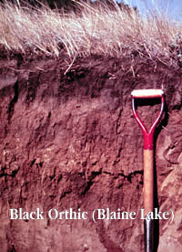

|
|
|
| Soil Structure reflects how the individual soil particles clump or bind together or aggregate. Natural aggregates that can be clearly seen in the field are called "peds". Clods, on the other hand, are aggregates that are broken into shape by artificial actions such as tillage. Structure is very important since (along with texture) it affects the pore space of the soil. A dense structure will greatly reduce the amount of air and water than can move freely through the soil. Also, it will affect "root penetration" or the plant's ability to propagate roots through the soil. There are five major classes of structure seen in soils: granular, blocky, platy, prismatic and structureless. | |||
 Granular structure is very common in the surface soils of rich grasslands with high organic matter content. Mineral aggregates are glued together by organic matter. Cultivation, earthworms, frost action and rodents mix the soil and keep the peds small. This structure allows for good porosity and easy movement of air and water The soil is generally easy to till. | |||
Platy structure is usually found in subsurface soils that have been subject to leaching or compaction by animals or machinery. The plates can be separated with a little effort by prying the horizontal layers with a pen knife. We see this structure just below the surface layer in a Gray soil it is usually very pale in colour. | |||
Blocky structures are common in sub soils but are also found in grassland surface soils that have a high clay content. The blocky peds are formed largely as a result of swelling and shrinking of the clay minerals which produce cracks. Sometimes the surface of dried-up sloughs and ponds shows characteristic cracking and peeling due to clays. | |||

Prismatic structures are characteristic of the B horizons or subsoils of grasslands. The vertical cracks result from freezing and thawing and wetting and drying as well as the downward movement of water and roots. A special kind of prismatic structure has rounded tops and is found in sodic or alkali soils. Columnar structure is very dense and it is very difficult for plant roots to penetrate these layers. Techniques such as deep plowing have help to restore some degree of fertility to these soils.
| |||

Structureless soils have no discernable peds. They might be sandy or clayey soils. Common structureless soils in Saskatchewan are usually associated with aolian (wind blown) sands. |